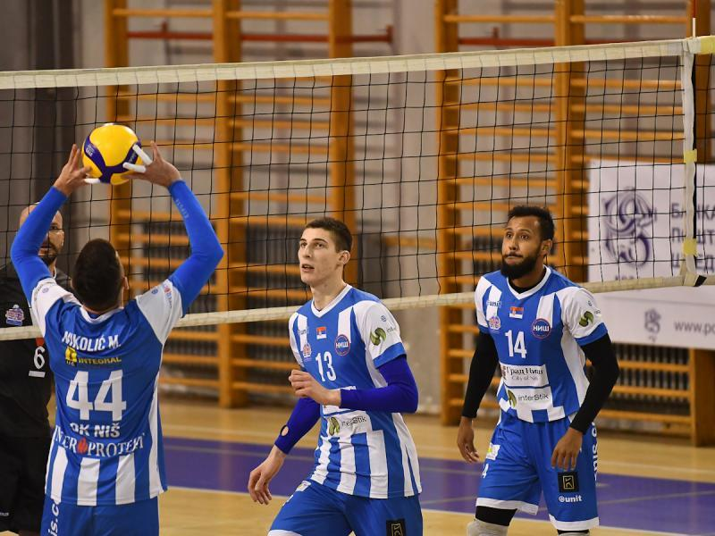

VATERPOLO BOMBA! ZVEZDA DOVODI NIKOLU RAĐENA: Sprema se povratak čoveka s kojim su postali prvaci Evrope!
By Jelena 12/20/20 6 comments
Vaterpolisti Zvezde žele da se pojačaju i budu konkurentni, ne samo u regionu, već i čitavoj Evropi, a crveno-beli su sada fokusirani na dovođenje velikog pojačanja. Nikola Rađen bi mogao da ponese kapicu Crvene zvezde, prenosi "Sportski žurnal". Nekadašnji reprezentativac Srbije nastupa za AEK iz Atine, a ovaj list navodi da je između igrača i kluba sve dogovoreno.

Odbojkaši Niša pobedom završili 2020. godinu
By Lazar 12/15/20 4 comments
U poslednjem meču u ovoj godini, u odloženom meču 12. kola Superlige, odbojkaši Niša su na svom terenu savladali Radnički iz Kragujevca rezultatom 3:1 (18:25, 25:22, 25:19, 25:16). Za najbolji sportski kolektiv u Nišu u ovoj godini sledi pauza do 15. januara kada nastavljaju nadmetanje u elitnom rangu.
Uros Aškovic oborio jos jedan Ginisov rekord
By Jelena 12/13/20 6 comments
Pitamo se, gde su granice ljudske izdržljivosti posle najnovjeg podviga Uroša Aškovića (28), pobornika Street workouta (vežbanja na otvorenom, bez tegova). Mladi Obrenovčanin je nezvanično oborio Ginisov rekord u izvođenju zgibova na vratili za 60 minuta. Zvanični rekord takmičara iz Poljske, koji iznosi 1125 zgibova, nadmašio je za šest pokušaja
Majk Džejms napušta CSKA?
By Aleksa 11/20/20 3 comments
Najbolji košarkaš CSKA iz Moskve Majk Džejms po svemu sudeći napustiće ekipu koja je trenutni lider Evrolige.Prema pisanju poznatog italijanskog novinara Fabricija Lorencija iz "Republike", Džejms je završio angažman u taboru "Armejaca".
Kvalifikacije za EP: Srbija – Grčka 31:21
By Vasilije 10/15/20 3 comments
Rukometaši Srbije savladali su Grčku u Zrenjaninu rezultatom 31:21 u kvalifikacijama za Evropsko prvenstvo.
6. kolo: Real - Borusija (M) 2:0
By Minja 09/10/20 5 comments
Fudbaleri Reala pobedili su u B grupi Lige šampiona Borusiju Menhengladbah sa 2:0 (2:0), dok na meču Intera i Šahtjora nije bilo golova.